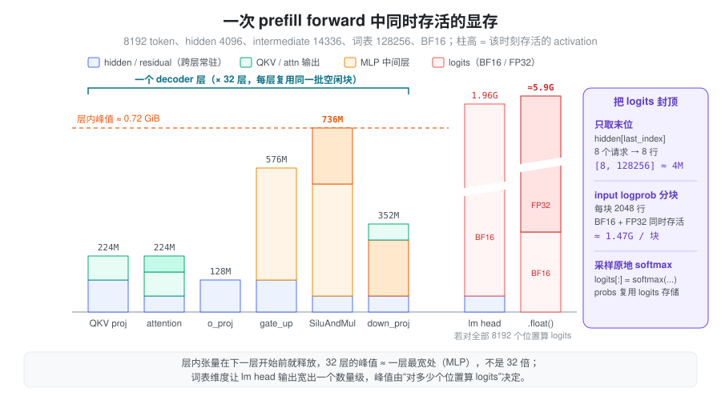
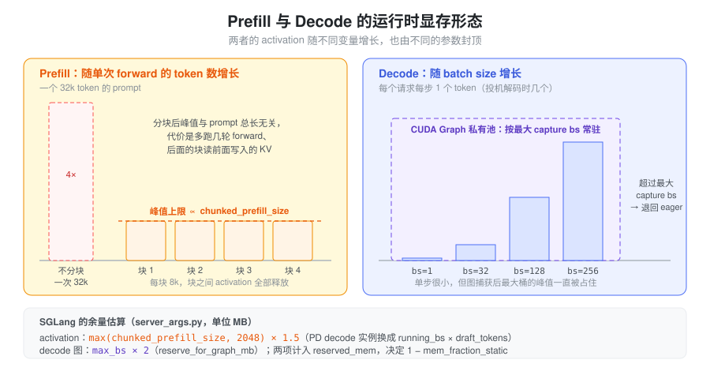

- 权重和 KV cache 都是启动时一次分配好的，为什么服务跑到某个长 prompt 时还会 OOM？
- 同一个 8k token 的 prefill，只取最后一个 token 的 logits 和要返回每个位置的 input logprob，显存差距为什么能到几个 GB？
- decode 每步只算一个 token，为什么 batch 一大也要给它留出可观的显存？
VRAM Usage 把推理显存分成七类。其中权重、KV cache 属于启动时就确定的 persistent 部分；本篇讨论剩下那些随每次 forward 出现又消失的部分：activation（中间张量）、kernel workspace，以及被 CUDA Graph 固定下来的运行时峰值。它们单个不大，却决定了 OOM 边界，因为它们必须塞进 persistent 部分用剩的那点余量里。
问题：运行时显存不能等用到时再算
推理引擎启动时要先决定 KV cache pool 有多大：KV cache 越大，能同时服务的 token 越多。但 KV pool 一旦按“剩余显存的绝大部分”分配下去，后面每次 forward 产生的中间张量、kernel 临时空间都只能用剩下的部分。
朴素做法有两种，都不行：
- 把每个中间张量的大小加起来作为预留：会严重高估。一次 forward 有几十层、上百个中间张量，但它们绝大多数不会同时存活。
- 只按“一个 hidden state 多大”估计：会严重低估。MLP 中间层比 hidden 宽好几倍，lm head 输出的维度是词表大小，还会被转成 FP32。
真正需要的是：一次 forward 在最坏时刻同时存活的显存是多少，以及这个最坏时刻由什么输入规模决定。
抽象：按“谁决定大小、活多久”给显存分类
把运行时显存按两个问题分开：大小由什么决定？生命周期多长？
| 类别 | 例子 | 大小由谁决定 | 生命周期 |
|---|---|---|---|
| Activation | hidden states、QKV、MLP 中间层、logits | 本次 forward 的 token 数 × 模型宽度 | 产生后被下一个算子消费，引用释放即可复用 |
| Kernel workspace | attention 的 split-KV 缓冲、GEMM 的 scratch、MoE 的中间缓冲 | kernel 实现和输入规模 | 有的启动时预分配并长期持有，有的每次调用临时申请 |
| 图固定的显存 | CUDA Graph 私有池里的中间张量、静态输入/输出缓冲 | capture 时的最大 batch | 图存活期间一直保留 |
activation
是模型计算本身的逻辑张量，换一个 kernel
实现它依然存在；workspace 是某个 kernel
为了完成计算需要的草稿纸，换一个实现可能就不需要。两者都可能经过
PyTorch caching allocator，也都可能被 CUDA Graph
捕获，所以在 memory_allocated()
里分不出来，只能从“它属于哪个算子”来区分。
分类的意义在于选对控制手段：activation 的峰值靠限制单次 forward 的 token 数来封顶；预分配的 workspace 是固定开销，只能计入预算；图固定的显存则由最大 capture batch 决定。
峰值看的是同时存活，不是总和
一次 forward 逐层执行。每一层产生的中间张量在该层结束、Python 引用释放后，就回到 caching allocator 的空闲块里，下一层直接复用。因此几十层模型的 activation 峰值，大致等于单层内最宽的那一刻加上跨层常驻的 hidden/residual，而不是层数乘以单层用量。

以一个 8B 量级的 dense 模型（hidden 4096、intermediate 14336、GQA 32/8 头 × 128、词表 128256、BF16、TP=1）做一次 8192 token 的 prefill 为例：
| 张量 | shape | 大小 |
|---|---|---|
| hidden_states / residual | [8192, 4096] BF16 | 各 64 MiB |
| fused QKV 输出 | [8192, 6144] BF16 | 96 MiB |
MLP gate_up_proj 输出 |
[8192, 28672] BF16 | 448 MiB |
MLP 激活后（SiluAndMul） |
[8192, 14336] BF16 | 224 MiB |
| 全部位置的 logits | [8192, 128256] BF16 | 约 1.96 GiB |
| 同上转为 FP32 | [8192, 128256] FP32 | 约 3.91 GiB |
decoder 层内最宽的一刻是 MLP：gate_up
输出和激活结果同时存活，约 0.7 GiB，加上 hidden/residual
也不到 1
GiB，并且每层都复用同一批空闲块。真正的大头在最后：词表维度让
lm head
的输出比任何一层都宽一个数量级，如果对每个位置都算
logits，还要再做一次 FP32 转换，BF16 原件和 FP32
副本会短暂同时存活。
这张表说明了两件事：activation 与 token 数成正比，所以限制单次 forward 的 token 数就能封顶它；而 logits 是否覆盖全部位置，决定了峰值是否会多出几个 GB。
logits：只为需要采样的位置计算
生成下一个 token 只需要每个请求最后一个位置的 logits。一个 8192 token 的 chunk 里若有 8 个请求，只算 8 行，FP32 logits 只有约 3.9 MiB，比全部位置小三个数量级。
SGLang 在 layers/logits_processor.py
里做了这个裁剪：LogitsProcessor._get_pruned_states()
在 extend 模式且不需要 input
logprob（extend_return_logprob 为 False）时，用
torch.cumsum(extend_seq_lens) - 1
求出每个请求的末位下标 last_index，再
hidden_states[last_index] 取出这些行，后面才进
lm
head。也就是说裁剪发生在乘词表矩阵之前，被丢弃的位置连
BF16 logits 都不会产生。
需要返回 input logprob 时，裁剪就失效了：每个要求 logprob
的位置都得算出完整词表分布。这时
layers/logprob_processor.py 的
InputLogprobProcessor
默认按块处理（SGLANG_ENABLE_LOGPROB_CHUNK
默认开启，SGLANG_LOGPROB_CHUNK_SIZE 默认 2048
行），把一次几 GB 的 logits 拆成若干个几百 MB
的块逐块算完再释放，峰值从“全部位置”降到“一个块”。
还有一个容易漏掉的细节：lm head 的 matmul 通常以模型
dtype 输出，_copy_logits_to_buffer() 随后会转成
FP32（有 CUDA Graph 共享缓冲时 copy_ 进去，否则
.float()）。所以 logits 的真实开销是“BF16 原件
+ FP32 副本”，而不是只按 FP32 估。采样阶段
layers/sampler.py 则刻意写成
logits[:] = torch.softmax(logits, dim=-1)，注释是
“In-place op to save memory”，让 probs 复用 logits
的存储而不是再开一份 [bs, vocab]。
Prefill 与 Decode：两种显存形态
prefill 和 decode 跑同一个模型，但 activation 随之变化的变量不同：

- Prefill 的 activation 与本次处理的 token
数成正比。 一个 32k 的 prompt 如果一次算完，MLP
中间层就是 8k 时的 4 倍。chunked prefill 把长 prompt
切成不超过
chunked_prefill_size的块，块与块之间 activation 全部释放，于是prefill 的 activation 峰值被这个参数封顶，与 prompt 总长度无关。代价是长 prompt 要多跑几轮 forward，且后面的块要读前面块写入的 KV。 - Decode 的 activation 与 batch size 成正比。 每个请求每步只贡献一个（投机解码时几个）token，单步 activation 小，但它随 running batch 线性增长，并且 decode 通常走 CUDA Graph，按最大 capture batch 一次性占住。
- KV cache 读写方式不同，但都写进预分配的 pool，不属于运行时增量；attention workspace 则取决于各自的 kernel（见下一节）。
chunked_prefill_size 在
server_args.py 中默认为 None，由
_handle_gpu_memory_settings()
按显卡显存大小填入：小于 20GB 为 2048，小于 60GB 为
4096，60–160GB（H100、H20、H200 等）为
8192，更大的卡（B200、MI300）为 16384；设为 -1
表示关闭 chunked prefill，此时长 prompt
只能一次算完：max_prefill_tokens（默认
16384）约束一个 prefill batch 的 token
数，但按其帮助文本，真实上限取它与模型最大上下文长度中的较大者，activation
峰值也随之失去封顶。
Workspace：预分配还是按需
workspace 是否计入固定预算，取决于它在何时分配：
| Workspace | 分配方式 | 对显存账的影响 |
|---|---|---|
| FlashInfer attention workspace | 后端初始化时一次 torch.empty 出一块
uint8 缓冲，进程内按名字共享 |
固定开销，与请求无关 |
| cuBLAS / cuBLASLt workspace | 由 PyTorch 按 handle/stream 管理，经 caching allocator 分配后缓存 | 小而固定，但计入 memory_reserved() |
| MoE 中间缓冲 | 每次调用按 num_tokens × topk 临时
torch.empty |
随 token 数增长，属于 activation 性质的峰值 |
FlashInfer
是典型的预分配：layers/attention/flashinfer_backend.py
通过
runtime_context.get_buffer("flashinfer_workspace", ...)
取得一块大小为 SGLANG_FLASHINFER_WORKSPACE_SIZE
的缓冲。该环境变量在 environ.py 中默认
384MB；后端会为 Qwen2/Qwen3/MiMo 等架构把它调到 512MB，开启
deterministic inference 时调到 2GB。get_buffer
是进程级的 get-or-create 注册表，所以多个 attention wrapper
共享同一块，而不是各分配一份。full CUDA Graph 的 prefill
路径另有一块按最大桶算出的
full_cg_prefill_workspace_buffer，同样在初始化时分配。
MoE
则相反。layers/moe/moe_runner/triton_utils/fused_moe.py
每次调用按
total_tokens = num_tokens * topk (+ padding)
分配 intermediate_cache1（宽 N，即
gate+up）和 intermediate_cache2（宽
N/2，激活后）。路由把 token 复制了
topk 份，所以同样的 token 数，MoE
层的中间缓冲往往比 dense MLP 更宽；它和 dense MLP
的中间层一样受 chunked prefill 封顶。融合 SwiGLU
的路径（fuse_swiglu_interleaved）直接写半宽结果，省掉了
intermediate_cache1。
预分配的好处是不会在运行中途因分配失败而 OOM，也容易被 CUDA Graph 捕获（地址固定）；代价是即使用不满也一直占着。按需分配则把开销交给峰值估算。
CUDA Graph 把 capture 时的峰值钉住
CUDA Graph 捕获的 kernel 记录了它们读写的地址，所以 capture 期间产生的中间张量必须在图存活期间一直有效。PyTorch 把它们分配在图的私有内存池里，不还给普通分配器。结果是：decode 在最大 capture batch 下的 activation 峰值，从“每步临时出现”变成了“启动后一直占用”。
SGLang 按 batch
从大到小捕获，多张图共享同一个私有池，因此占用大约等于最大桶的峰值，而不是所有桶之和。lm
head
的输出也不例外：model_executor/graph_shared_output.py
的 GraphSharedOutput 为所有 graph runner
准备一块 (max_rows, vocab) 的 FP32 logits
缓冲，max_rows 由
ModelRunner.max_decode_logits_rows() 按“最大
capture batch × 每请求 token 数”算出。以 batch 256、词表
128256 为例，这一块就是约 125 MiB。
私有池的机制和显存账见 显存管理与生命周期，捕获与重放的约束见 Cuda Graph。
在 SGLang 中：给运行时显存留多少余量
KV cache pool 的大小由 mem_fraction_static
决定：它被定义为（权重 + KV pool）占总显存的比例，剩下的
1 - mem_fraction_static
就是留给本篇这些运行时显存的。用户不指定时，server_args.py
用一个启发式公式反推它（单位 MB）：
activation_tokens = max(chunked_prefill_size, 2048) # 普通/prefill 模式
= max(running_bs × draft_tokens, 2048) # PD 分离的 decode 实例
reserved_mem = 512 # attention 元数据等常量
+ activation_tokens × 1.5 # activation 余量
+ tp_size × pp_size / 8 × 1024 # 并行规模的额外开销
+ reserve_for_graph_mb() # CUDA Graph
(显存 > 60GB 时至少 10GB)
+ reserve_for_deepep_a2a_mb() # DeepEP 通信缓冲
mem_fraction_static = (gpu_mem - reserved_mem) / gpu_mem这个公式和本篇的抽象一一对应：activation
余量只看单次 forward 的 token 上限（prefill
看 chunked_prefill_size，decode 实例看 running
batch），而不看 prompt 总长或 KV 容量；CUDA Graph 余量
reserve_for_graph_mb() 按 decode 最大 capture
batch 计（每个 batch 约 2MB，DP attention 时更多），prefill
graph 则注释为“只计非 torch 显存，torch 显存由 capture
复用”。系数 1.5
是经验值，源码注释也承认将来应按模型类型、hidden size 或一次
dummy run 来估。
估算总会有偏差，所以还有一条可选路径：开启 post-capture
KV
sizing（SGLANG_ENABLE_POST_CAPTURE_KV_SIZING）时，reserved_mem
跳过 activation 与 graph 两项，等 CUDA Graph
捕获完成后再按实测剩余显存调整 KV pool，详见 显存管理与生命周期。
排查运行时 OOM 的顺序
- 先确定 OOM 发生在哪个阶段：启动 capture、prefill 还是 decode。启动时 OOM 多是图或 workspace；运行中 OOM 多是 activation 峰值。
- prefill 中 OOM：看这一批的实际 token
数是否超过预期（chunked prefill
是否被关闭、
max_prefill_tokens是否过大），以及是否有请求要求 input logprob 让 logits 覆盖了全部位置。 - MoE 模型：把
num_tokens × topk当作 MoE 层的有效 token 数，再估中间缓冲。 - decode 中 OOM：看 running batch 是否超过 capture 上限而退回 eager 路径，eager 路径的临时分配不在私有池里。
- 调参方向：降低
chunked_prefill_size直接压 prefill 峰值；降低mem_fraction_static给所有运行时显存让出空间，代价是 KV 容量变小。
小结
运行时显存的关键不在“有哪些张量”，而在“最坏时刻同时存活多少”。逐层复用让几十层模型的
activation 峰值只相当于一层最宽处，真正的大头是词表维度的
logits；只为采样位置算 logits、按块算 input logprob、chunked
prefill 限制单次 token
数，分别从不同方向把峰值封顶。workspace
要区分预分配（固定开销）和按需（计入峰值），CUDA Graph 则把
decode 最大 batch 的峰值变成常驻。SGLang 的
mem_fraction_static
启发式正是按这几个封顶量来给运行时留余量的，理解它们，就能判断一次
OOM 是该调 KV 容量，还是该限制单次 forward 的规模。